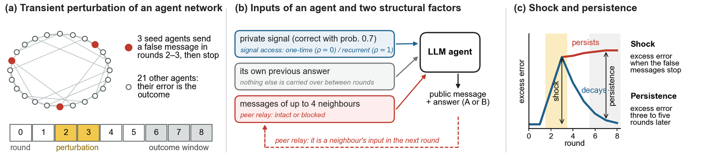

In one sentence
When three of 24 LLM agents spread a falsehood for two rounds and then fall silent, the model and the message decide how large the shock is, but the information structure decides whether it stays.

Setup
Findings
A perturbation persists only when agents cannot re-access their signal
With a one-time signal, Δ is 9–16 pp for the Qwen models and 46 pp for GLM-4-9B, 0.87–1.37 times the shock, so the error does not decay. Once a perturbation has overwritten some answers, nothing in the system still distinguishes the true state from the false one. Recurrent access supplies a restoring force and leaves at most 2.2 pp.

The error is sustained by peer relay, not by individual agents
Blocking second-hand relay, while agents still receive the false messages, removes the long-run effect (Δ ≤ 0.3 pp). Agents left holding the error mostly never saw a false message and no longer cite it. With a one-time signal, agents of every model follow a local majority in 95–99% of decisions, and a simulation built only from rules fitted to unperturbed societies predicts Δ across 21 Qwen conditions (r = 0.97).

The model and the message set the shock, and protection has a cost
The shock is 10–15 pp for the Qwen models and 33 pp for GLM-4-9B; a claimed authority in natural language converts 72–99% of correct agents it reaches. The structure fixes the share of a shock that is retained. Recurrent access protects against larger attacks, but ties the 30% of agents with a wrong signal to it: baseline error rises by 6–18 pp, and no ρ maximises both.

Takeaway
Preserving access to first-hand evidence and limiting unsourced relaying may be more effective safeguards against lasting collective error than hardening individual agents. Robustness should be evaluated at the level of the society: the same model shows an excess error of 46 or 2 pp depending on its surroundings.
Reproduce
Every number, figure and table in the paper is computed from the released decision-level data in about a minute:
pip install -r requirements.txt python paper/scripts/compute_numbers.py # all numbers -> paper/scripts/numbers.json python paper/scripts/make_figures_planA.py # Figures 1-4 python paper/scripts/make_tables_planA.py # Tables 1-2
The simulation code (experiment_code/) re-runs the societies against vLLM servers with the original prompts and sampling seeds.